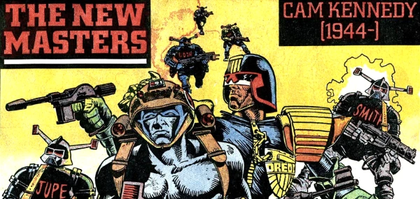

A seven-poster series celebrating the art of Ian Gibson, Robin Smith, Brett Ewins, Cam Kennedy, Cliff Robinson, Massimo Belardinelli and Carlos Ezquerra.
Art by Cam Kennedy
| Title | Parts | Pages | w indicates a wraparound coverCovers | Year(s) | Issues | Writer | Artist | Colourist | Letterer |
|---|---|---|---|---|---|---|---|---|---|
| Ian Gibson [1946-] | 1 | 1 | 0 | 1986 | 454 | n/a | Ian Gibson | <-- | n/a |
| Robin Smith [1957-] | 1 | 1 | 0 | 1986 | 457 | n/a | Robin Smith | <-- | n/a |
1955‑2015Brett Ewins [1955-] | 1 | 1 | 0 | 1986 | 458 | n/a | Brett Ewins | <-- | n/a |
| Cam Kennedy [1944-] | 1 | 1 | 0 | 1986 | 460 | n/a | Cam Kennedy | <-- | n/a |
| Cliff Robinson [1962-] | 1 | 1 | 0 | 1986 | 465 | n/a | Cliff Robinson | <-- | n/a |
1938‑2007Massimo Belardinelli [1938-] | 1 | 1 | 0 | 1986 | 466 | n/a | Massimo Belardinelli | <-- | n/a |
1947‑2018Carlos Ezquerra [1947-] | 1 | 1 | 0 | 1986 | 467 | n/a | Carlos Ezquerra | <-- | n/a |
| year | episodes | pages |
| 1977 | 0 | 0 |
| 1978 | 0 | 0 |
| 1979 | 0 | 0 |
| 1980 | 0 | 0 |
| 1981 | 0 | 0 |
| 1982 | 0 | 0 |
| 1983 | 0 | 0 |
| 1984 | 0 | 0 |
| 1985 | 0 | 0 |
| 1986 | 7 | 7 |
| 1987 | 0 | 0 |
| 1988 | 0 | 0 |
| 1989 | 0 | 0 |
| 1990 | 0 | 0 |
| 1991 | 0 | 0 |
| 1992 | 0 | 0 |
| 1993 | 0 | 0 |
| 1994 | 0 | 0 |
| 1995 | 0 | 0 |
| 1996 | 0 | 0 |
| 1997 | 0 | 0 |